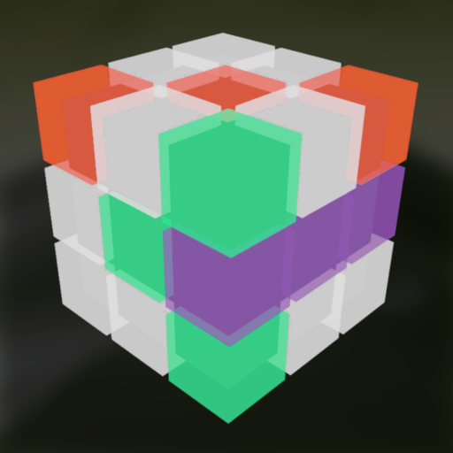
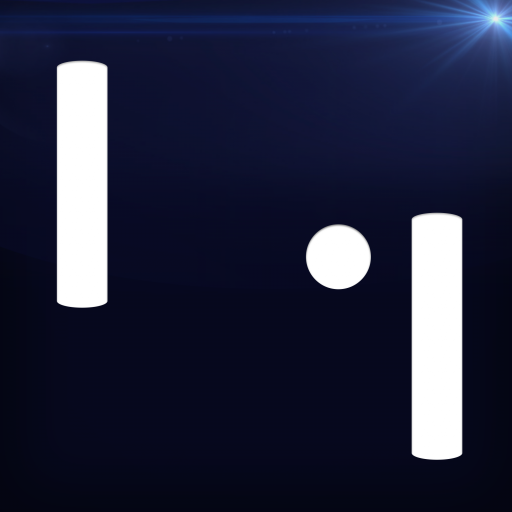

While working with Lottie animations I wanted to add some haptic feedback to the animation.
I found it quite hard to align the haptic feedback timing with the animation manually.
So, I created this app to help with that. It allows you to create haptic patterns using the
AHAP format.
(Initial release: 07/2025)

dayshape

I got annoyed with doomscrolling and spending too many days in a monotonous way.
That's why I created this app to help me (and anyone else) diversify their day.
It divides the day into different activity types, each with its own time budget and color.
This way, I can easily visualize and track my day.everyone else diversify their day.
(Initial release: 10/2024)
vijo — your video journal
A digital video journaling app. Allowing you to play music while recording yourself.
Available for iOS only (for now).
(Initial release: 06/2024)
lil tic-tac-toe²
I first heard of the concept from a Vsauce Short.
Simple idea, you play tic-tac-toe inside tic-tac-toe. The app uses a deterministic minmax AI strategy.
Another app inspired by the minimalistic desing of @jsngr.
Available on all Apple platforms (iOS, iPadOS, macOS, tvOS, visionOS).
(Initial release: 09/2023)
Days Since — Counter
Remember the accident counter intro of The Simpsons?
For some reason I had this stuck in my head thinking about implementing it in SwiftUI.
Took me like a day with some help from another open source project.
The uber simple design was inspired by @jsngr and lil software™.
It's also the 2nd app I've built completely open source.
(Initial release: 03/2022)
GeoguessAR
GeoguessAR aims to improve your sense of direction and distance. It was inspired by
a Tom Scott video.
In the app you can look "through" the Earth and see and guess
where other places in the world are relative to you.
(Initial release: 09/2021)
Adventures for Siri
While working with SiriKit Intents, I noticed how the resolution behaviour is somewhat wired and it's easy to
get caugh up in endless loops. Using that pattern I was able to make simple PnP-games you can play with or
against Siri. Including one of my all-time favorites: Dunnet.
(Initial release: 05/2021)
FINE Stickers
I had the privilege of working together with my awesome artist friend
Josefine,
hence the name of this app. It showcases just some of
her artwork in the form of iMessage and WhatsApp stickers. And for the record, I'm just the developer here,
this is her app! Also, this is the first app I ever published on Google Play™.
(Initial release: 03/2021)

seximal

Inspired by jan Misali I made an
app that showcases the seximal (or senary, heximal, base-six)
numbering system. It gives you a glimpse into a decimal seximal world. To learn more about seximal
visit seximal.net
(Initial release: 01/2021)
AvoidAR

A friend gave me the idea of creating a game, which's feature it is to keep your finger on the touchscreen
for as long as possible. A few moments later I started to create a game where you need to dodge obstacles
flying toward you in Augmented Reality (also using 3D-Touch). Lifting your finger means Game Over!
(Initial release: 01/2021)
ToDo-pamine

This app was inspired by the YouTube video I Built a
Dopamine Box.
Creating a daily to-do list (even if it only has mundane tasks) can increase dopamine production and thus
overall productivity. I felt that I could do that by providing an alternative to the default iOS
Reminders.app, to maximize productivity. The result is my first ever published SwiftUI app.
(Initial release: 11/2020)
(TicTacToe)³
This is one of the very first 3D AR Multiplayer experiences on the AppStore™. Combining the classic
TicTacToe with the newest technologies, creating an outstanding game for you and your friends.
(Initial release: 09/2018)
Pong Adventure
This is my fist App which is available on the AppStore™. It isn't highly complex, but
I developed this App entirely by myself and am very proud that it made it into the store!
(Initial release: 2014)